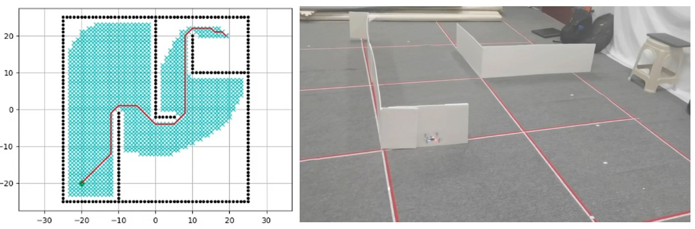

项目四：基于 crazyflie 无人机控制平台的编队飞行与路径规划
机器人学实验

项目介绍
项目简介：基于 crazyflie 无人机控制平台，通过室内动捕系统，实现小型无人机的编队飞行与路径规划、避障飞行
主要工作： crazyfile 无人机实验平台部署； A* 算法、 rrt 算法及人工势场法的 python 实现与效果对比
项目成果
• 实现了无人机的多机编队飞行和路径规划功能，对比不同规划算法在应用中的差异
关键技术
- 路径规划算法
- 优先队列
- python